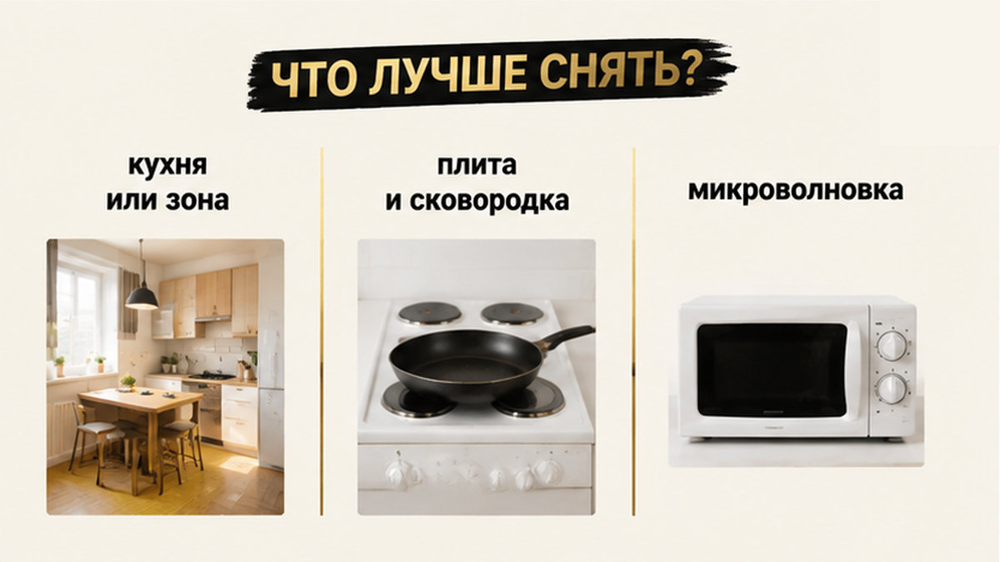
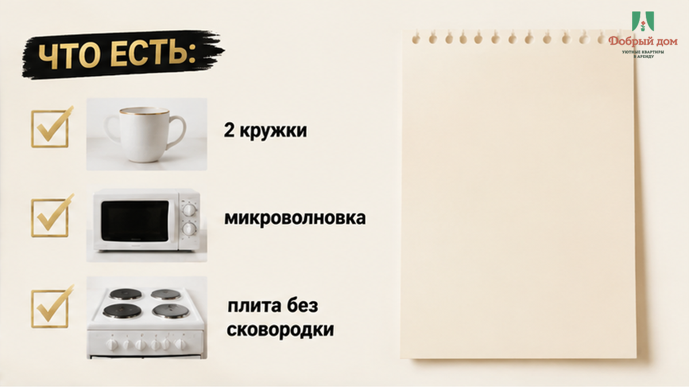
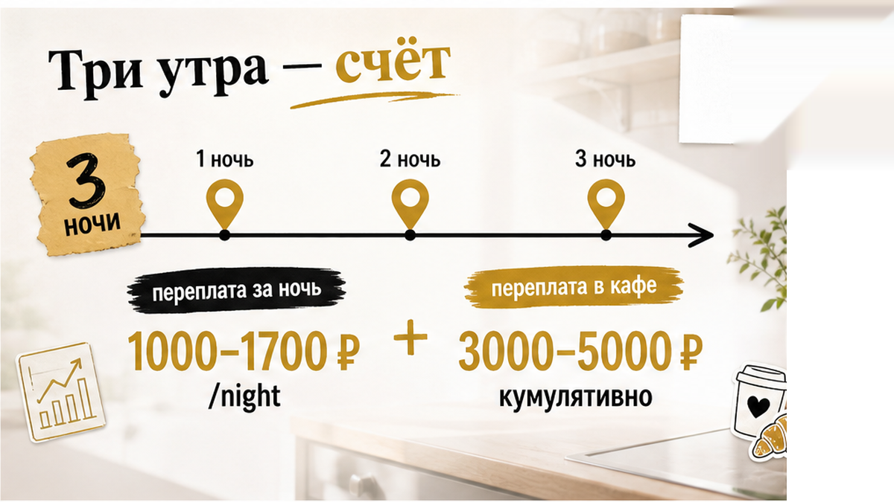
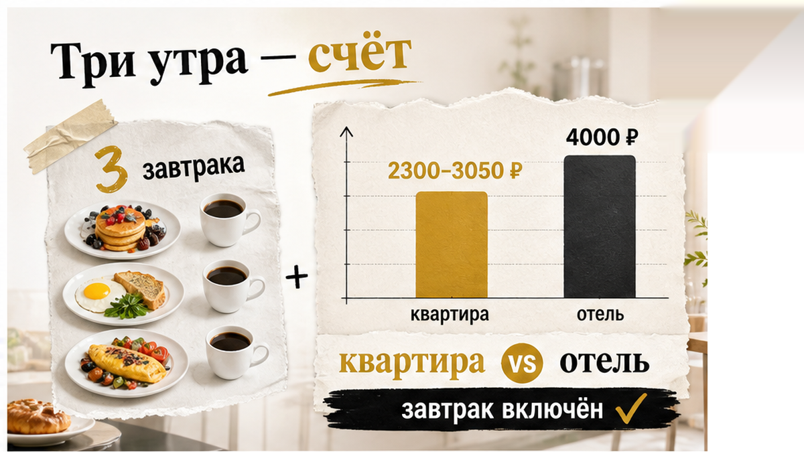
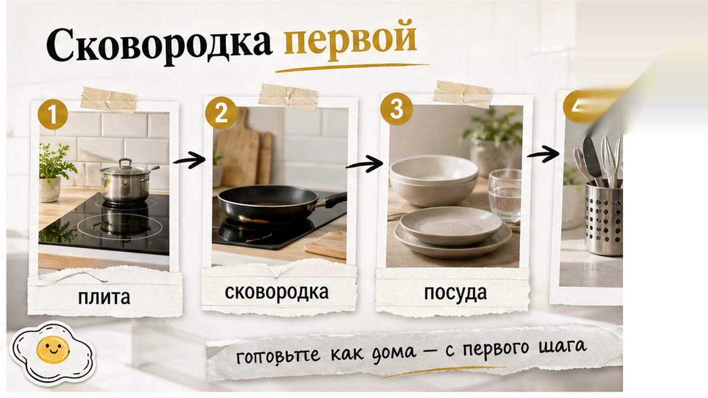
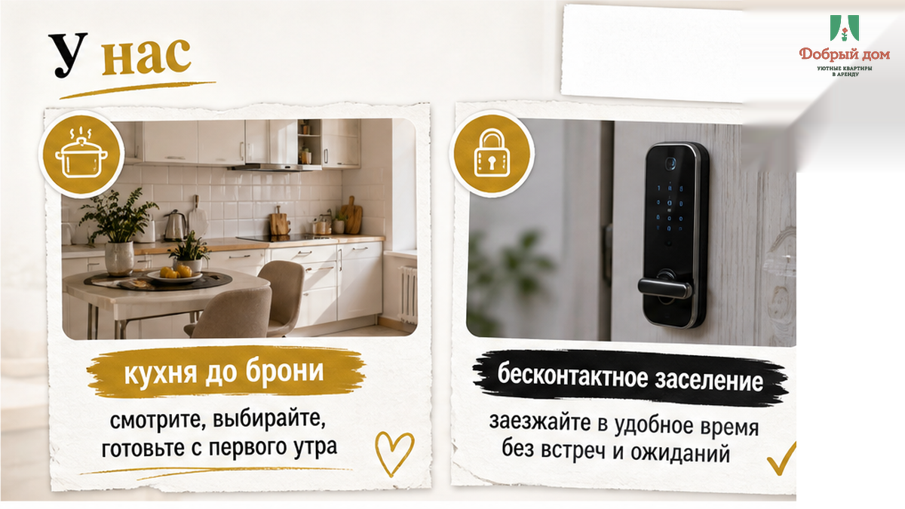

Двадцать седьмое августа, половина восьмого утра. Гость снял квартиру в Тюмени на три ночи и вечером специально зашёл в магазин напротив: яйца, хлеб, сыр — утром позавтракаем дома. В объявлении стояло короткое и убедительное слово: «кухня». Утром он открыл шкаф и увидел две кружки, чайник, микроволновку, одну тарелку, одну вилку и пластиковый стакан. Плита была, но сковородки не оказалось. Гость постоял у этой кухни, оделся и пошёл в кафе. Потом пошёл ещё дважды — все три утра.
Вот здесь и ломается привычная иллюзия: «кухня» в объявлении ещё не означает экономию. Если готовить не на чем и не из чего, это всего лишь галочка в фильтре. За три ночи такая галочка может стоить 3 000–5 000 ₽ — примерно столько составляет разница между квартирой и отелем с завтраком. Поэтому до брони важнее спросить не «есть ли кухня», а что именно на ней можно сделать.
Я хост посуточной в Тюмени. Это «Добрый дом». Пишу такие разборы в Telegram и в MAX, потому что одни и те же вопросы приходят каждую неделю — обычно уже после заселения, когда деньги уплачены, продукты куплены и переигрывать поздно.


Самая честная фраза, которую я слышал от коллеги по цеху, звучала так: «Кухня есть, всё как на фото». И формально он не врал. На фотографии действительно были гарнитур, стол, два стула и чайник на столешнице. Плита попала в кадр краем. Сковородка не попала вообще, потому что её не было.
Гость читает слово «кухня» как обещание: я смогу приготовить еду. Хозяин иногда использует его в другом смысле: в квартире есть кухонная зона. Это два разных утверждения. Между ними помещается весь утренний поход в кафе.
В одном объявлении под кухней будет полный комплект: плита, микроволновка, холодильник, чайник и посуда на четверых. В другом — чайник, кружка и раковина. Оба хозяина поставят одну и ту же отметку. Поэтому опытные гости смотрят не на название помещения, а на конкретные предметы: плиту, сковородку, микроволновку, холодильник, кастрюлю и количество посуды.
И вот тот самый вопрос, который стоит задать до оплаты, слово в слово: «Плита и сковородка или только микроволновка?»
Он короткий, зато быстро отделяет рабочую кухню от фотографии для объявления. Если вам отвечают: «Плита индукционная, две сковородки, кастрюля, посуда на четверых», — скорее всего, человек сам заходил на эту кухню и понимает, о чём говорит. Если ответ звучит как «всё для проживания есть» или «ну кухня оборудована», считайте, что готовить, вероятно, не на чем. Не потому что хозяин обязательно хочет обмануть. Просто он мог ни разу не попробовать там завтракать.
Микроволновка и чайник — полезная связка, но это другая история. Она позволяет разогреть готовую котлету из кулинарии, пельмени из супермаркета, кашу быстрого приготовления, сделать чай или кофе. На две-три ночи кому-то этого вполне достаточно. Иногда микроволновка действительно удобнее плиты: не нужно готовить и мыть посуду.
Но это не полноценная готовка. Яичницу в микроволновке не сделать так, как на сковороде, и суп на четверых тоже. Плита становится преимуществом только вместе со сковородкой и кастрюлей. А если плита индукционная, посуда ещё и должна к ней подходить: половина старых кастрюль просто не включится.
Поэтому уточняйте не только наличие плиты, но и то, можно ли пользоваться всей техникой. Бывает, что стиральная машина указана в описании, а на месте висит записка «не включать». Формально предмет в квартире есть, практически его нет.


Тот гость написал мне вечером третьего дня: «Три завтрака на двоих вышли почти как ещё одна ночь». Точные чеки я не буду придумывать за него — каждый знает свои расходы в кафе. Сравнивать эту сумму нужно не с полной ценой квартиры, а с разницей между квартирой и отелем с завтраком.
На конец августа посуточные квартиры в Тюмени в выдаче обычно стоят 2 300–3 050 ₽ за сутки, хотя встречаются варианты от 1 000 ₽. Отель с завтраком по агрегаторам в среднем выходит примерно в 4 000 ₽ за ночь. Разброс большой: от около 1 171 ₽ до 6 000 ₽ и выше — всё зависит от даты и категории.
Разница между квартирой и отелем с завтраком получается примерно 1 000–1 700 ₽ за ночь. За три ночи — 3 000–5 000 ₽. Это и есть цена утренней ошибки. Если три завтрака в кафе на двоих обходятся дороже, отель с завтраком оказался выгоднее. Просто гость понял это не в момент брони, а на третье утро, когда снова пришлось одеваться вместо того, чтобы поставить сковородку на плиту.
Если кухня рабочая и вы действительно готовите, квартира выигрывает с запасом. Но экономия появляется не от самого факта наличия кухонного гарнитура. Нужно зайти в магазин, потратить время на приготовление, потом помыть посуду. На отдыхе многие честно не хотят ни того, ни другого. Это нормально. В таком случае кухня вам не нужна, и платить за неё как за аргумент экономии смысла нет.
Есть ещё маленькие вещи, которые рушат план быстрее отсутствующей сковородки: соль, масло и чай. Формально это не техника, и в описании их обычно не указывают. Но гость может приехать с яйцами, обнаружить, что масла нет, и заказать доставку. Один вопрос в переписке иногда экономит больше, чем длинное описание кухонной зоны.
Что вы берёте на три ночи — отель с завтраком или квартиру с кухней? Если сейчас спорите с собой, ответ можно прислать в Telegram или MAX. По ответам хорошо видно, что люди регулярно ищут вариант «отель или посуточная квартира», но редко проговаривают, что именно стало решающим.
Скажу как хост, которому это невыгодно говорить: на одну-три ночи отель с завтраком часто оказывается удобнее. Стоимость фиксированная, завтрак стандартный, готовить и мыть не нужно, посуду не приходится искать по шкафам. Вы платите один раз и не думаете о еде.
На три-пять ночей отель тоже может выиграть, если гость не готовит. Квартира становится рациональной там, где человек действительно встаёт и делает завтрак, а не собирается сделать это когда-нибудь. Три ночи — пограничный случай. Всё решают не слова в карточке, а техника на месте и ваши реальные планы.
У квартиры есть и другие преимущества: своя стиральная машина, тишина, возможность приехать поздно и никого не разбудить, отдельная комната для ребёнка. Это хорошие аргументы, но ими не нужно подменять завтраки. Отдельно полезно сверить, что входит в стоимость квартиры посуточно — уборка, бельё, поздний заезд — чтобы не смешивать это с завтраками. Если кухня для вас важна, её состав выясняют до заезда. То же касается условий заселения: я подробно писал о бесконтактном заселении в посуточную, потому что всё непроговорённое в переписке на месте всплывает сюрпризом.

Вердикт один: сначала техника и посуда, потом арифметика, потом бронь. Не наоборот. Квартира за 2 700 ₽ в сутки с плитой, микроволновкой и полным набором посуды и квартира за те же 2 700 ₽ с чайником — два разных товара под одной ценой.
Слово «кухня» — это отметка в объявлении. Ваш завтрак — это плита, сковородка, кастрюля и посуда. И только после этого можно честно считать, сколько вы сэкономите. Три ночи без рабочей кухни — это не бытовая мелочь, а 3 000–5 000 ₽, которые легко уходят в кафе.
После вывода чек-лист уже имеет смысл. До оплаты спросите в переписке:
На въезде проверьте два главных предмета: плиту и холодильник. Плита должна включаться, все зоны — работать. Холодильник должен холодить, а не просто стоять для вида. Если вы рассчитываете только на разогрев, проверьте связку «чайник плюс микроволновка». Для поездки на две-три ночи этого часто хватает.
Плиту полезно осмотреть внимательно и по другой причине, но это уже отдельная история. Главное в нашем случае — не принимать кухонную зону за рабочую кухню, пока вы не увидели посуду и технику.

В «Добром доме» состав кухни прописывается заранее: посуда, техника, бельё и условия указаны до брони. Заселение бесконтактное, в мессенджере отвечаем примерно за пять минут. Идея простая: чтобы квартира давала домашние удобства, а не только фотографию кухонного гарнитура.
Точный состав кухни по конкретной квартире смотрите в карточке бронирования или уточняйте напрямую. Вопрос «плита и сковородка или только микроволновка?» можно задать нам так же, как любому другому хозяину.
Если планируете квартиры посуточно в Тюмени и хотите заранее знать, что стоит на кухне — напишите в Telegram, в MAX или менеджеру @Dobriy_dom_Tyumen. Сайт: добрыйдом-72.рф (https://добрыйдом-72.рф/), бронирование: добрыйдом-72.рф/booking/ (https://добрыйдом-72.рф/booking/), телефон +7 (993) 574-83-22.